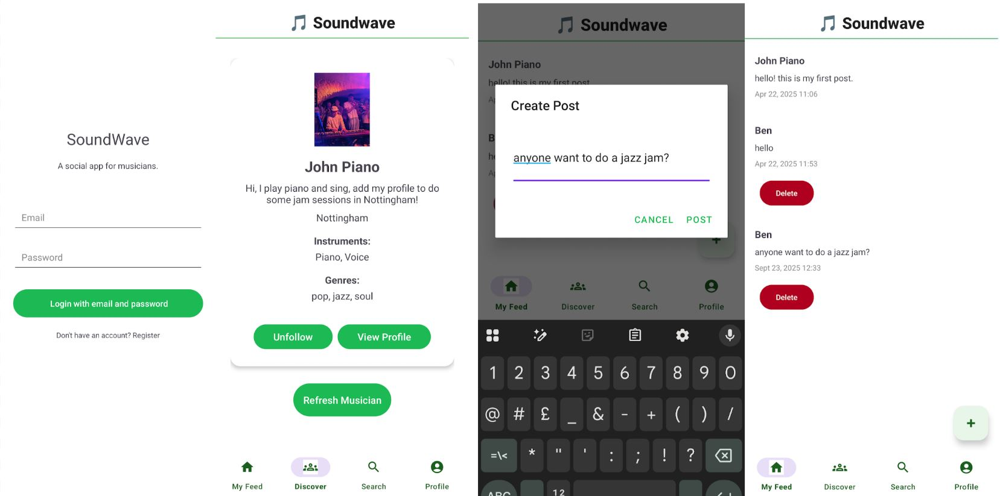

I design and build practical software with a focus on clean structure,
intuitive user experience, and real-world use. These are some of my projects.
SoundWave - A Social app for Musicians

A mobile social platform for musicians to connect, collaborate, and discover.
Designed and built end-to-end using Android Studio and Firebase, with UI prototyped in Figma.
Tech: Android, Java, Firebase, Figma
Property Management App
A mobile application for landlords to manage properties, tenants, and maintenance requests,
with an emphasis on simple workflows and offline-first usability.
Tech: Android, Java, Firebase
Dorm Room Booking System
A distributed booking system for student accommodation, built with a Java client
and RESTful backend hosted on Tomcat.
Tech: Java, REST APIs, Tomcat
AI Music Chatbot
An AI-powered chatbot that answers questions about brass instruments using natural language,
voice input, and image recognition.
Tech: Python, NLP, AI models
Smart Fridge App (Team Project)
A collaborative mobile app built in an Agile team environment,
focused on user-centred design and rapid iteration.
Tech: Android, Java, Agile, GitHub